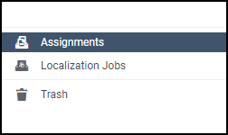
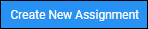
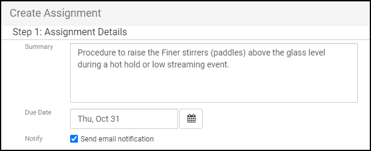
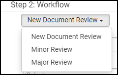
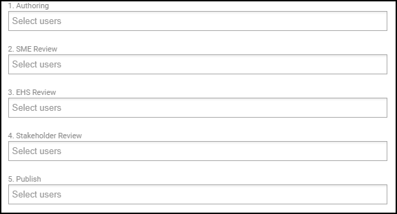
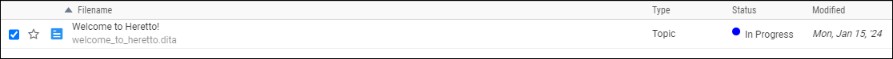
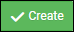
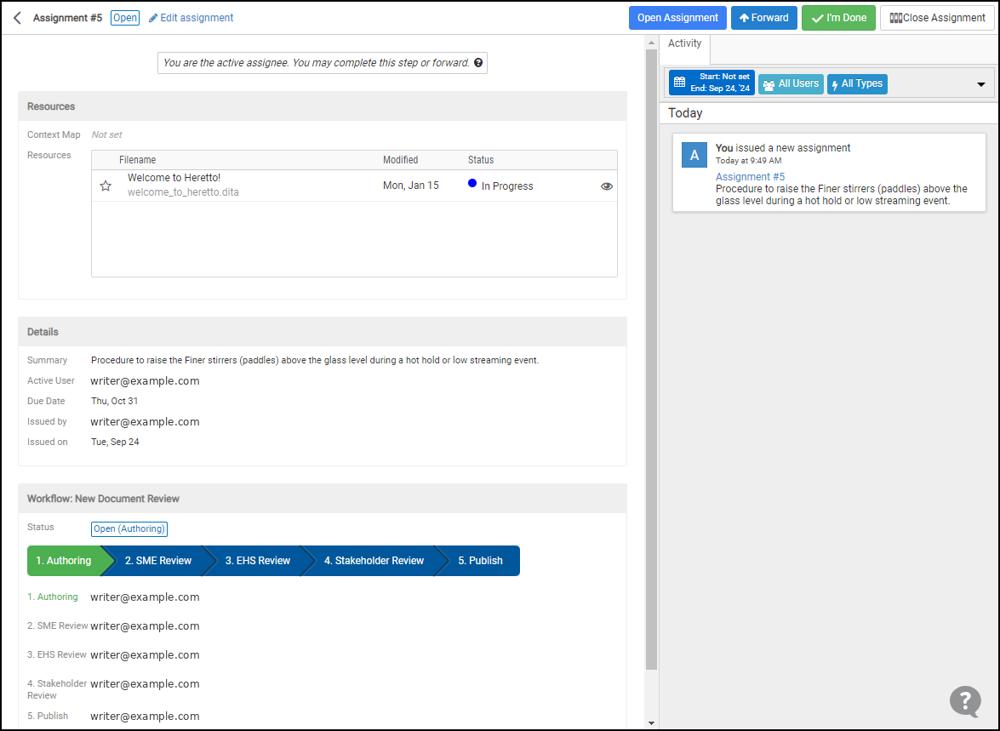

Using the Assignments tool
You can use Assignments to create tasks or tickets in the Heretto CCMS to track work on documents. Assignments follow workflows, which are the sequences of steps a document goes through during its lifecycle. Workflows are tailored to fit different approval processes.
Setting up assignments in Heretto
-
Open Assignments.
- Go to the bottom left of the Heretto interface and click Assignments. The Assignments window opens.

-
Create a new assignment.
- Click the Create New button to start setting up a new assignment.

- Fill in the summary and due date, and select Send email notifications.

-
Choose a workflow.
- Select a predefined workflow that suits the review process. Workflows define the sequence of steps an assignment goes through.

-
Assign participants to each step.
- Assign team members to each step of the workflow.
Note: You can assign more than one participant to a step.

- Assign team members to each step of the workflow.
-
Select files.
- Choose the files to include in the assignment. You can select individual files or entire maps for a full review.
- Click the Select button.

-
Send for review.
- When the assignment is set up, click the Create button to send it for review. Participants receive email notifications.

-
Monitor and manage assignments.
- Use the Assignments dashboard to monitor progress, make adjustments, or mark steps as complete.
